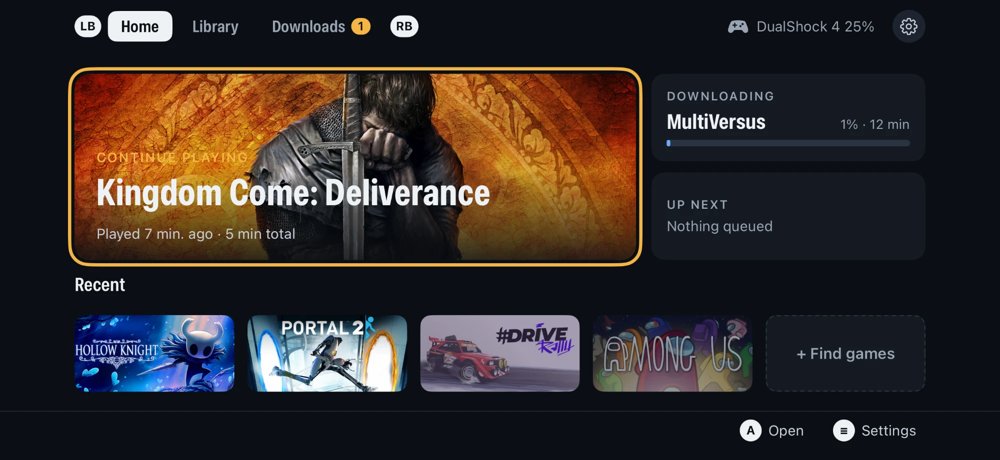
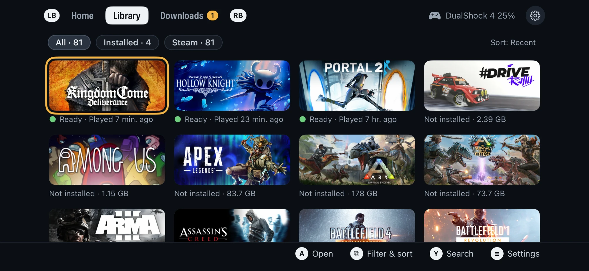
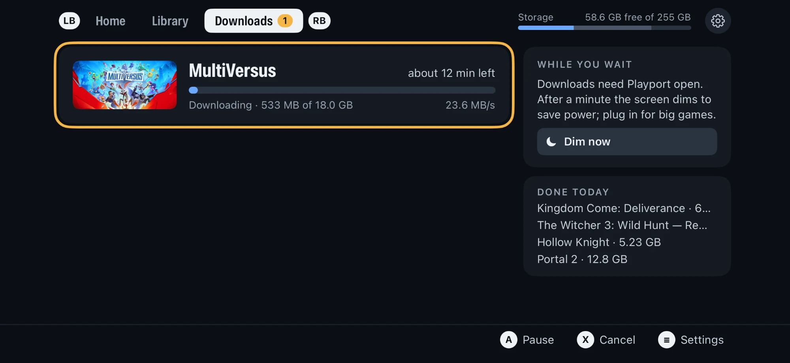
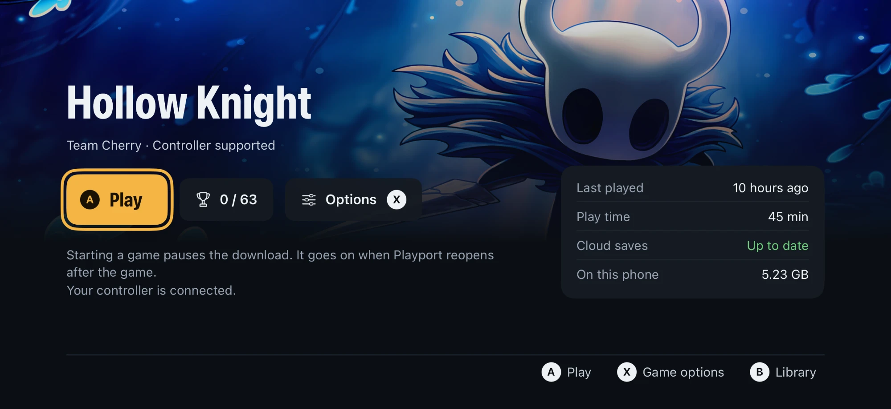
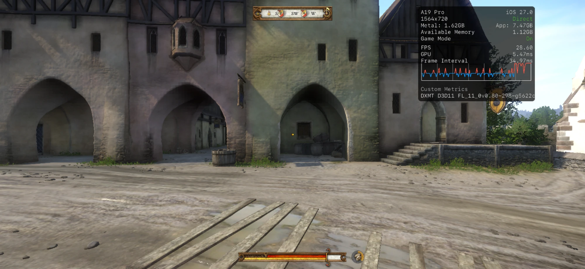
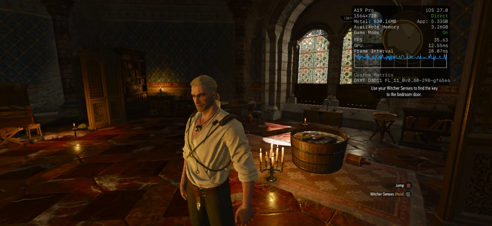
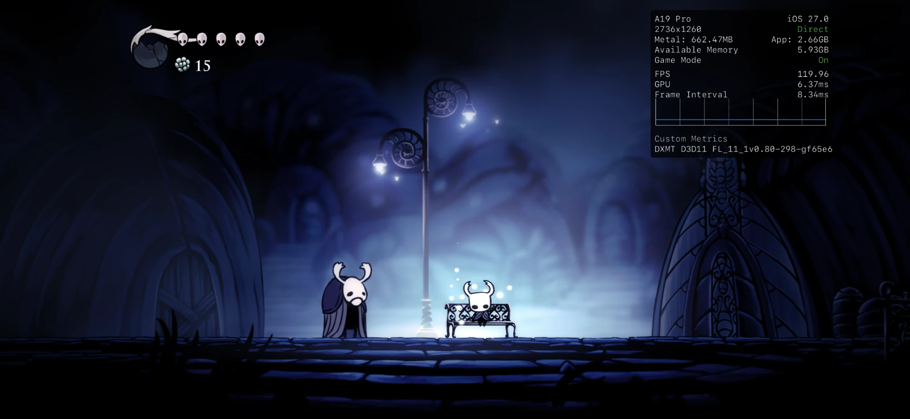

Playport runs Windows games, 64-bit and now 32-bit, on a stock, non-jailbroken iPhone. Install a game from your library, pick up a controller and press Play. It runs on the phone's own CPU and GPU: no PC, no cloud, no stream.
The app
A gamepad-first app for the games you own: browse, download and play, all on the phone.




Why Playport
A Windows .exe starts on the iPhone as it would on a PC, translated and rendered on the device, with a controller in your hands.
iOS keeps the lowest 4 GB of memory to itself, exactly where a 32-bit Windows game has to live. Playport gives each 32-bit game its own 4 GB window higher up and translates every memory access as it runs, so the game never notices. Portal 2 is the first: about 60 fps at 720p, with both portals, sound, a controller, saves and Steam Cloud.
Wine, the FEX x86 translator and DXMT run together inside one iOS app. Direct3D 10 and 11 render straight to Metal through DXMT.
A Vulkan backend on KosmicKrisp, Mesa's Vulkan driver for Metal, ported to iOS. It draws Direct3D 9 through DXVK (Portal 2 runs on it) and opens the door to Direct3D 12 through vkd3d-proton. Each game gets the right backend automatically.
A landscape, gamepad-first interface and an in-game menu to pause, resume or quit. Controllers reach the game as XInput.
Sign in to your store, browse what you own and download it straight to the phone. Steam works today; GOG and Epic Games are planned.
Over 170 of our own patches on top of our dependencies: the 32-bit runtime, performance and compatibility work (faster FEX translation for Unity games, x87 math at native precision, lossless texture compression kept on in DXMT, geometry shaders and transform feedback in KosmicKrisp, feature level 12_0 in vkd3d-proton), dozens of bug fixes, and the diagnostics behind them. Each one is a reviewable patch with the evidence for it.
The app carries its own JIT helper, so every Play works from the phone alone after a one-time pairing.
How it works
iOS allows no second process and no JIT without a debugger, so Playport runs Wine's whole multi-process design as threads of a single app, with its own JIT helper attached for every launch.
All of it is one iOS process: the wineserver is a thread, each Windows program a pseudo-process with its own PEB, each 32-bit game gets its own 4 GB window, and the translated code lives in a JIT pool the app's own helper unlocks. Read the architecture.
Built on Madeira, taken further
Playport is built on willfaust/Madeira, the research project that first ran Wine, FEX-Emu and DXMT as one process on iOS. Madeira proved it could be done; Playport turns it into an app you can play with. In plain points:
| Madeira | Playport | |
|---|---|---|
| 32-bit games | x86-64 only | x86-64 and 32-bit x86: Portal 2 at about 60 fps NEW |
| Graphics | Direct3D 11 through DXMT | DXMT for Direct3D 10 and 11, plus Vulkan through KosmicKrisp: Direct3D 9 through DXVK, Direct3D 12 through vkd3d-proton |
| Wine | 11.4 fork | WineHQ 11.18 + Valve's Proton 11 Wine |
| FEX | 2607 fork | FEX 2609.1 |
| DXMT | older fork | DXMT main |
| Getting games | launches set up per test title | Sign in to Steam, browse your library, download to the phone; cloud saves and achievements |
| The app | a touch-driven test bench | A landscape, gamepad-first app with an in-game menu |
| JIT | a separate debugger app attaches for every launch | A JIT helper built into the app, after a one-time pairing |
| Building | Xcode on a Mac | One Linux machine and a free Apple ID |
| Getting it | build it yourself | A ready .ipa, with the complete source of that exact build |
Get started
No computer needed after you install it. The app walks you through the rest.
Good to know
Playport is young. Here is what to expect.
On the phone
A screen recording and screenshots from an A19 Pro iPhone on iOS 27.0, with Metal's performance HUD on. Every frame is rendered on the phone.


